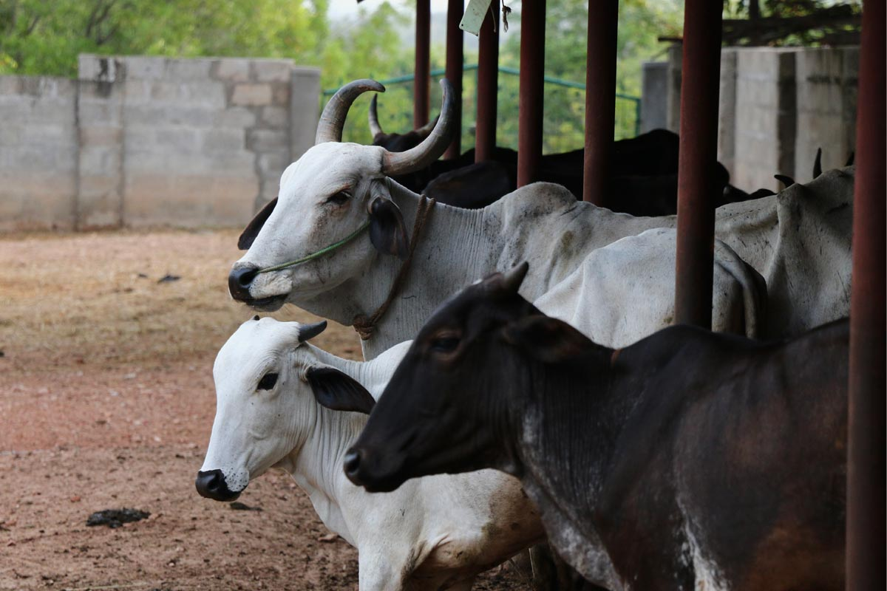
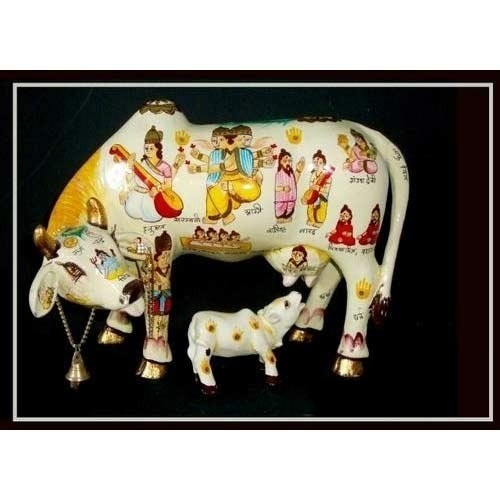
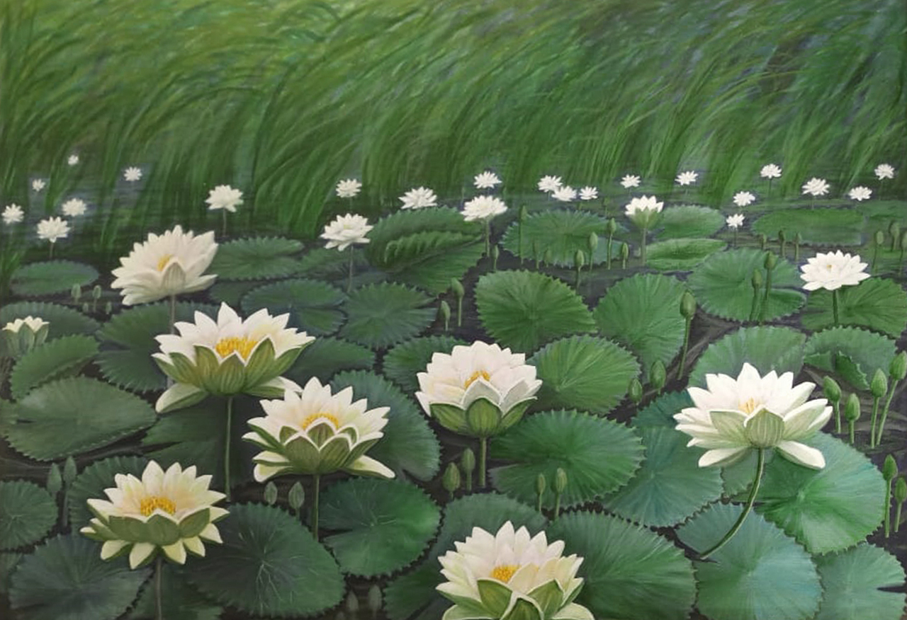
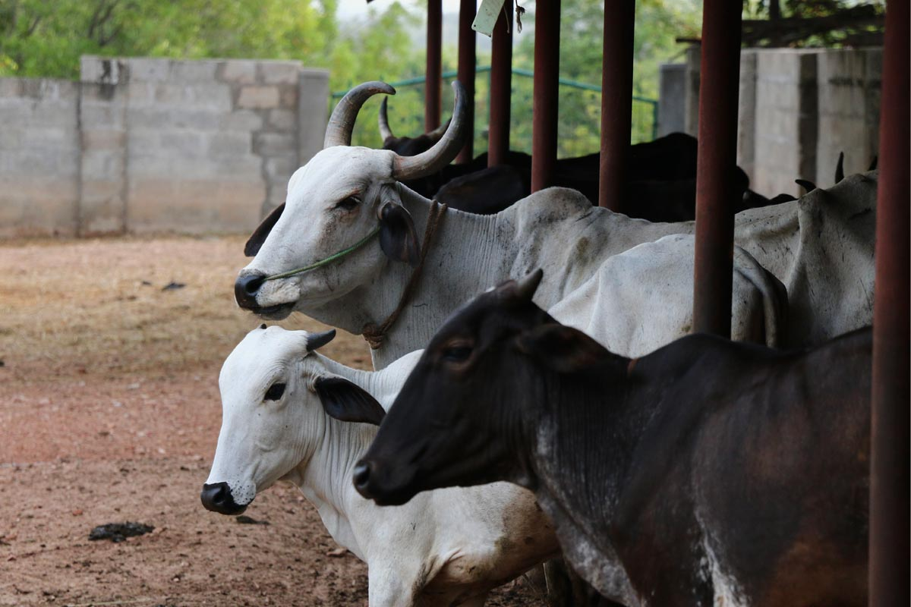
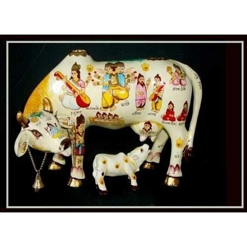
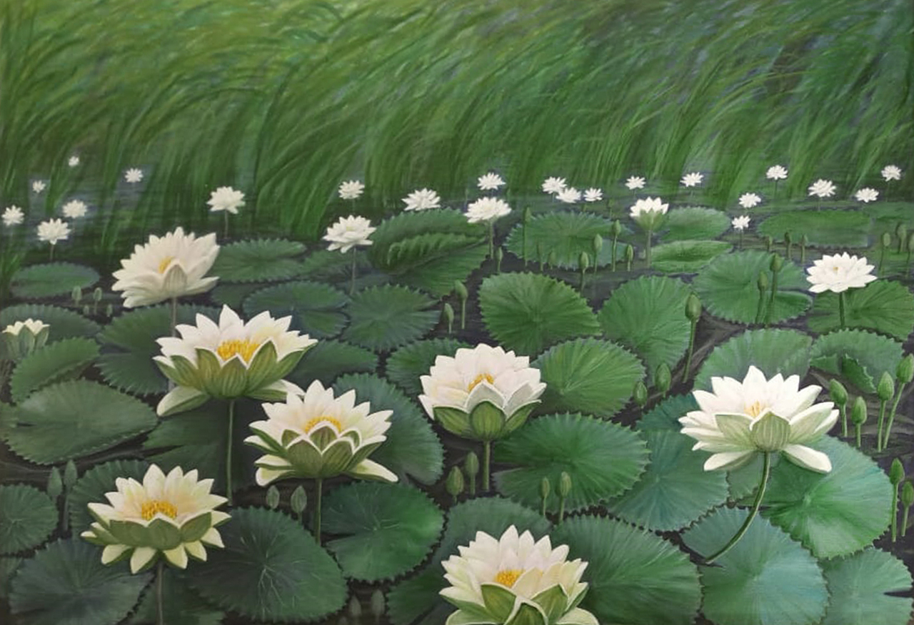

The Mrityunjya Temple Nagaon Ashram is a place of planning and organization for various and distinct
spiritual projects mainly established on the ancient Vedic principles of seva (service), dana (charity),
tapa (austerities), yagna (sacrificial ritual) and Dharma (Religion).
In welcoming volunteers who may likely have had no exposure to Sanatani Hindu Dharma or Hindu spirituality
in general, we are politely reverent and respectful of their own personal beliefs and spiritual practices.
And therefore, with open minds and hearts we encourage you to be a part of our spiritual activities.
One of our volunteer projects in India is our organic garden at the temple. We invite our volunteers, devotees and visitors to participate in this beautiful project. Therefore they can have the hands-on sense of connecting with Mother Earth. And as has been noted, to cultivate healthful, organic produce for the ashram’s kitchen.
A big part of the ashram tradition involves offering food to the deities before serving it to the inhabitants and guests. We aim to use the highest quality, purest ingredients in food preparations for the deities. What better way to express our gratitude to Mother Earth and our love to Lord Mahamrityunjya than growing our own organic food!
Although the lifestyle in the ashram is very simple or even somewhat austere by western standards, the consciousness of the devotees is quite elevated due to daily exposure to sacred scriptures and constant engagement in pious service. We encourage visitors and volunteers to immerse themselves in this devotional environment to gain an authentic ashram experience.
Throughout the year, the ashram publishes news about the major spiritual and cultural events, celebrations and festivals at Mahamrityunjya Temple, Nagaon. Some of the volunteer programs available include organic farming, vegetarian cooking and baking, as well as general maintenance. The Mahamrityunjya Temple Nagaon, can be regarded as one of the important ecological educational center in Assam.
The Ashram inmates cultivate their own food using organic farming, permaculture and bio-dynamic techniques. Only Cow dung is used as a natural manure and no chemicals are used. . Vedic philosophy and holistic lifestyle in harmony with caring for and respecting Mother Earth can be found overflowing in this ashram. The residents of the community also work as volunteers. They devote their valuable time and energy to develop the project as well as their own personal cultivation.
The Mrityunjya Ashram actively promotes community experience. Moreover inspiring visitors to have a glimpse of the magic of sharing the same space and interests with a number of people of a similar nature. Thus opening the door to a whole new world of friends and relationships that will surely fill you with joy and enthusiasm.
In this way, anyone interested can get to know more about the wisdom of ancient India and Vedic Philosophy. Here we help you discover concepts such as karma, reincarnation, and many other values connected to Eastern spirituality and mysticism. We provide it through a number of interesting gatherings, held periodically.
In conclusion, our desire is to share a lifestyle based on simple and healthy living and very deep and high feeling. In this way we can give to each other a whole range of new experiences that will enrich our lives and foster our abilities.
Taking care of cows and being around them is a blissful experience altogether! The indigenous cows are very warmhearted, observant and affectionate. Being naturally very loving and friendly, they too instinctively look for deep love, care and cuddling .Simply hug , pat them, feed them and show your care and they will just love you!
The Vedic Sashtras have revealed that the entire Gods , Goddesses and Demigods headed by Goddess Laxmi resides in Gau Mata (Goddess Mother Cow) and the one who feeds, loves and cares her will accumulate many punyas and earn success in life. Thus Gau seva (caring for the cows) is considered one of the highest forms of seva (service). Also, in many communities, the cow is believed to be sacred and worshipped.
Cow is not just an ordinary animal. She is Holy Divinity….By feeding a cow, you can overcome the malefic effects of planets in your horoscope. People looking for child or favors through real estate should feed a cow. It is beneficial if you feed green grass or flour sweets to the cow. If you are going through bad experiences every day, then after shower taking cows blessing by touching her feet will bring in peace, harmony & prosperity in your life. The Hindu Sanatani Scriptures declare that it is very auspicious seeing cow or hearing its voice while going for important work. If sun is unfavorably placed in your horoscope then feeding cows with wheat bread (Indian roti) brings in blessings. Moreover, presence of cow in the house removes all the vastu dosha whereas showing a disrespect to her is said to brings in bad luck.
The following sukta is taken from the Atharva Veda describing the Cosmic form of an ox and a cow. Their quality is sattvic – pure, nourishing, life-giving. They are intelligent and alert, yet by nature they are relaxed. This beautiful hymn glorifies cows in an amazing way.It is important to understand that these Vedic verses were written more than 5000 years ago. Even in that time, people were trying to protect cows by assigning them amazing Cosmic form. One can only wonder – if at that time people were protecting the cows, can we not also do so today?
प्रजापतिश्च परमेष्ठी च शृङ्गे इन्द्र: शिरो अग्निर्ललाटं यम: कृकाटम् ॥१॥
सोमो राजा मस्तिष्को द्यौरुत्तरहनु: पृथिव्यधरहनु:॥२॥
विद्युज्जिह्वा मरुतो दंता रेवतीर्ग्रीवा: कृत्तिका स्कन्धा धर्मो वह:॥३॥
विश्वं वायु: स्वर्गो लोक: कृष्णद्रं विधरणी निवेष्य: ॥४॥
Prajāpati and the most exalted one are the two horns; Indra the head; Agni the forehead; Yamathe neck joint. ||1||
Moon is the brain; the sky the upper jaw; the earth the lower jaw. ||2||
Lightning is the tongue; the Maruts the teeth; the Revatī the neck; the Kṛṭikā the shoulders; the Sun the withers. ||3||
Vāyu is all the limbs; the heavenly world its abode; the spinal cord is Rudra. ||4||
n the Mrityunjya Ashram,visitor are provided guided tours with information regarding the different breeds of Indian cows and their material and spiritual benefit to society. Therefore, simply join in and offer a helping hand by grooming cows and cleaning sheds and earn your Punyas.
Interact with the students of Mrityunjay Veda Vidyala Peeth who are living a self-disciplined life style through the fully Residential School of Gurukula System. Apart from providing all round education special emphasis is laid on morality, leadership and preservation and restoration of ancient Vedic heritage as well as education and training on varied fields such as English literature, Assamese literature, Science, Maths, Language skills, Drama, Song, Dance and other fine arts are also imparted to the students. The objective of the School is to provide Man – Making and character building education and making the children realize, appreciate and follow the cultural heritage of our country.
The Mrityunjay Veda Vidyala Peeth was established on February 2013, and operates in the aegis of Maharishi Sandipani Rashtriya Ved Vidya Pratishthan,under MHRD,Govt. of India.
Organic Garden and Agriculture in Mrityunjya Temple Ashram
One of our volunteer projects in India is our organic garden at the temple. We invite our volunteers, devotees and visitors to participate in this beautiful project. Therefore they can have the hands-on sense of connecting with Mother Earth. And as has been noted, to cultivate healthful, organic produce for the ashram’s kitchen.
A big part of the ashram tradition involves offering food to the deities before serving it to the inhabitants and guests. We aim to use the highest quality, purest ingredients in food preparations for the deities. What better way to express our gratitude to Mother Earth and our love to Lord Mahamrityunjya than growing our own organic food!
Ashram Life – “Simple living, elevated thinking…
Although the lifestyle in the ashram is very simple or even somewhat austere by western standards, the consciousness of the devotees is quite elevated due to daily exposure to sacred scriptures and constant engagement in pious service. We encourage visitors and volunteers to immerse themselves in this devotional environment to gain an authentic ashram experience.
Throughout the year, the ashram publishes news about the major spiritual and cultural events, celebrations and festivals at Mahamrityunjya Temple, Nagaon. Some of the volunteer programs available include organic farming, vegetarian cooking and baking, as well as general maintenance. The Mahamrityunjya Temple Nagaon, can be regarded as one of the important ecological educational center in Assam.
The Ashram inmates cultivate their own food using organic farming, permaculture and bio-dynamic techniques. Only Cow dung is used as a natural manure and no chemicals are used. . Vedic philosophy and holistic lifestyle in harmony with caring for and respecting Mother Earth can be found overflowing in this ashram. The residents of the community also work as volunteers. They devote their valuable time and energy to develop the project as well as their own personal cultivation.
The Mrityunjya Ashram actively promotes community experience. Moreover inspiring visitors to have a glimpse of the magic of sharing the same space and interests with a number of people of a similar nature. Thus opening the door to a whole new world of friends and relationships that will surely fill you with joy and enthusiasm.
In this way, anyone interested can get to know more about the wisdom of ancient India and Vedic Philosophy. Here we help you discover concepts such as karma, reincarnation, and many other values connected to Eastern spirituality and mysticism. We provide it through a number of interesting gatherings, held periodically.
In conclusion, our desire is to share a lifestyle based on simple and healthy living and very deep and high feeling. In this way we can give to each other a whole range of new experiences that will enrich our lives and foster our abilities.
Gaushala
Taking care of cows and being around them is a blissful experience altogether! The indigenous cows are very warmhearted, observant and affectionate. Being naturally very loving and friendly, they too instinctively look for deep love, care and cuddling .Simply hug , pat them, feed them and show your care and they will just love you!
The Vedic Sashtras have revealed that the entire Gods , Goddesses and Demigods headed by Goddess Laxmi resides in Gau Mata (Goddess Mother Cow) and the one who feeds, loves and cares her will accumulate many punyas and earn success in life. Thus Gau seva (caring for the cows) is considered one of the highest forms of seva (service). Also, in many communities, the cow is believed to be sacred and worshipped.
Cow is not just an ordinary animal. She is Holy Divinity….By feeding a cow, you can overcome the malefic effects of planets in your horoscope. People looking for child or favors through real estate should feed a cow. It is beneficial if you feed green grass or flour sweets to the cow. If you are going through bad experiences every day, then after shower taking cows blessing by touching her feet will bring in peace, harmony & prosperity in your life. The Hindu Sanatani Scriptures declare that it is very auspicious seeing cow or hearing its voice while going for important work. If sun is unfavorably placed in your horoscope then feeding cows with wheat bread (Indian roti) brings in blessings. Moreover, presence of cow in the house removes all the vastu dosha whereas showing a disrespect to her is said to brings in bad luck.
The following sukta is taken from the Atharva Veda describing the Cosmic form of an ox and a cow. Their quality is sattvic – pure, nourishing, life-giving. They are intelligent and alert, yet by nature they are relaxed. This beautiful hymn glorifies cows in an amazing way.It is important to understand that these Vedic verses were written more than 5000 years ago. Even in that time, people were trying to protect cows by assigning them amazing Cosmic form. One can only wonder – if at that time people were protecting the cows, can we not also do so today?
प्रजापतिश्च परमेष्ठी च शृङ्गे इन्द्र: शिरो अग्निर्ललाटं यम: कृकाटम् ॥१॥
सोमो राजा मस्तिष्को द्यौरुत्तरहनु: पृथिव्यधरहनु:॥२॥
विद्युज्जिह्वा मरुतो दंता रेवतीर्ग्रीवा: कृत्तिका स्कन्धा धर्मो वह:॥३॥
विश्वं वायु: स्वर्गो लोक: कृष्णद्रं विधरणी निवेष्य: ॥४॥
Prajāpati and the most exalted one are the two horns; Indra the head; Agni the forehead; Yamathe neck joint. ||1||
Moon is the brain; the sky the upper jaw; the earth the lower jaw. ||2||
Lightning is the tongue; the Maruts the teeth; the Revatī the neck; the Kṛṭikā the shoulders; the Sun the withers. ||3||
Vāyu is all the limbs; the heavenly world its abode; the spinal cord is Rudra. ||4||
n the Mrityunjya Ashram,visitor are provided guided tours with information regarding the different breeds of Indian cows and their material and spiritual benefit to society. Therefore, simply join in and offer a helping hand by grooming cows and cleaning sheds and earn your Punyas.
Padum Pukhuri
This is a pond for harvesting Lotus flowers. Many varieties
of fish live in this pond and are there for purely spiritual purpose (NOT Commercial). Earn your “Matsya
Punya” (Spiritual Merit by feeding fish) by proving food to them. Since ages, people are feeding these small
and harmless creatures. It is believed that fish take all your adversaries and safeguard you from troubles.
If you are in debts or seeking money, you should feed flour balls. You should feed fish early in the morning
and after sunset. Sanskrit Vidyalaya
Interact with the students of Mrityunjay Veda Vidyala Peeth who are living a self-disciplined life style through the fully Residential School of Gurukula System. Apart from providing all round education special emphasis is laid on morality, leadership and preservation and restoration of ancient Vedic heritage as well as education and training on varied fields such as English literature, Assamese literature, Science, Maths, Language skills, Drama, Song, Dance and other fine arts are also imparted to the students. The objective of the School is to provide Man – Making and character building education and making the children realize, appreciate and follow the cultural heritage of our country.
The Mrityunjay Veda Vidyala Peeth was established on February 2013, and operates in the aegis of Maharishi Sandipani Rashtriya Ved Vidya Pratishthan,under MHRD,Govt. of India.
 





CONCLUSION
In conclusion, our desire is to share a holistic way of life based on simple and healthy living and very deep and high feeling. In this way we can give to each other a whole range of new experiences that will enrich our lives and foster our abilities. And which in turn will ignite our consciousness, spirit and make us better, joyous and successful human beings.
As an authentic Hindu ashram in the Mrityunjya tradition, all of our activities are spiritual in nature, meaning everything is considered devotional service. In welcoming volunteers who likely have had no exposure to Hindu spirituality, we are respectful of your own personal beliefs and spiritual practices. With open minds and hearts we encourage you to join us in our spiritual activities. Entering into the temple space, you will feel as if you could be in a village in India lost in time. For those seeking tranquility and a peaceful environment to deepen spiritual awareness this is the perfect place. So don’t wait, just join us and change your life…